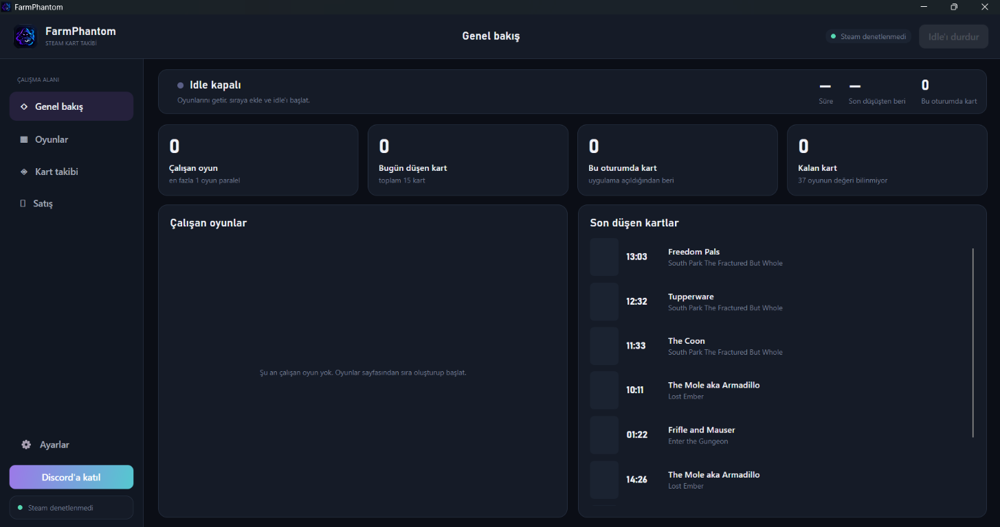
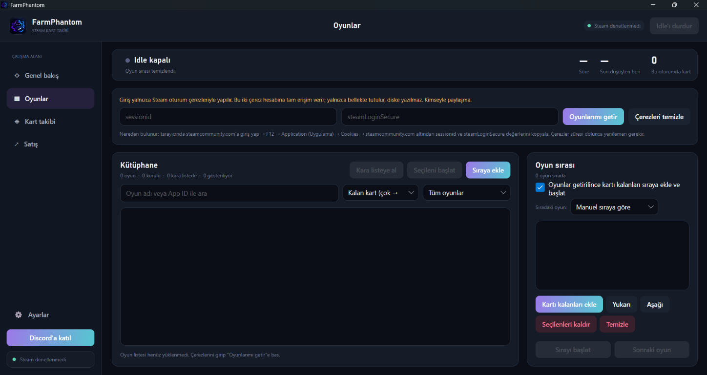
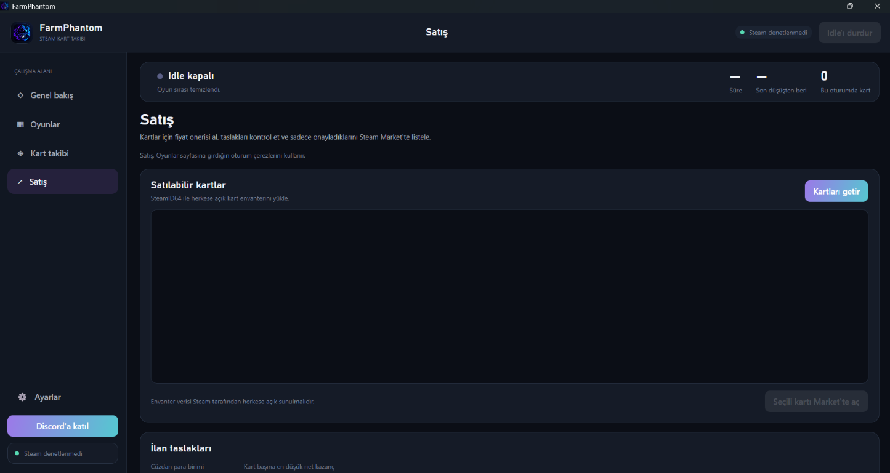

Paralel idle
Parallel idle
Aynı anda 1–32 oyun. Sıra senin, ya da kartı az/çok kalana göre.
1–32 games at once. Your order, or fewest / most cards left.
Steam card tracker
Birden fazla oyunu aynı anda idle et, gerçek düşüşleri say, Market ilanını sen basınca yayınla. Windows masaüstü, açık kaynak, MIT.
Idle several games at once, count real drops, list on the Steam Market only when you confirm. Windows desktop, open source, MIT.
Bu benim ilk uygulamam. Geliştirirken öğreniyorum; geri bildirim ve fikirlerini duymayı çok isterim.
This is my first app. I'm learning as I build it, and feedback or ideas are always welcome.
Aynı anda 1–32 oyun. Sıra senin, ya da kartı az/çok kalana göre.
1–32 games at once. Your order, or fewest / most cards left.
Yalnızca o anda idle ettiğin oyunun kartı yazılır. Takas sayılmaz.
Only cards from games you are idling right now. Trades don’t count.
Fiyatı çeker, taslak çıkarır. Onaylamadan Market’e bir şey gitmez.
Fetches prices, builds drafts. Nothing hits the Market until you confirm.
Kendi botun, DM bildirim, birkaç uzaktan komut. Satış uzaktan yok.
Your bot, drop DMs, a few remote commands. No remote selling.
FarmPhantom’ın sıradaki adımları. Tarihler kesin değil; öncelikler geri bildirimlere göre değişebilir.
What’s next for FarmPhantom. Dates aren’t promised; priorities may shift with feedback.
Bu liste bir plan taslağıdır, kesin teslim tarihi veya özellik sözü değildir.
This is a working plan, not a promise of specific features or delivery dates.



steam_api64.dll dosyasını app/ içine koy (repoda yok).steam_api64.dll in app/ (not in the repo).cd app → dotnet runGiriş Steam çerezleriyle. sessionid ve steamLoginSecure hesap anahtarı gibi; paylaşma. Idle Steam kurallarına takılabilir, yüksek paralel sayı riski artırır.
Login is Steam cookies. sessionid and steamLoginSecure are full account access; don’t share them. Idle can still get an account restricted. High parallel counts make that more likely.